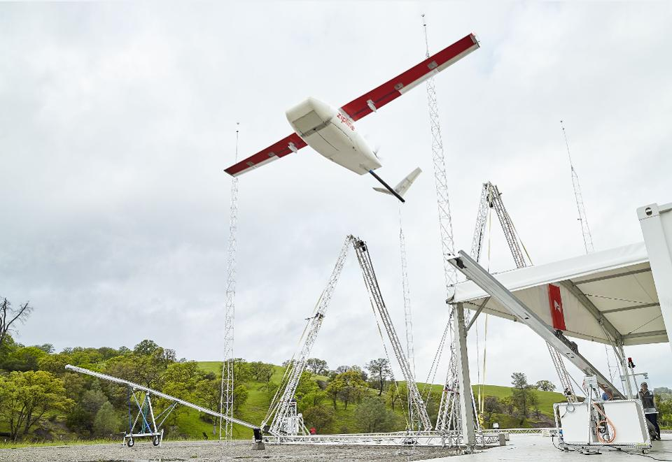
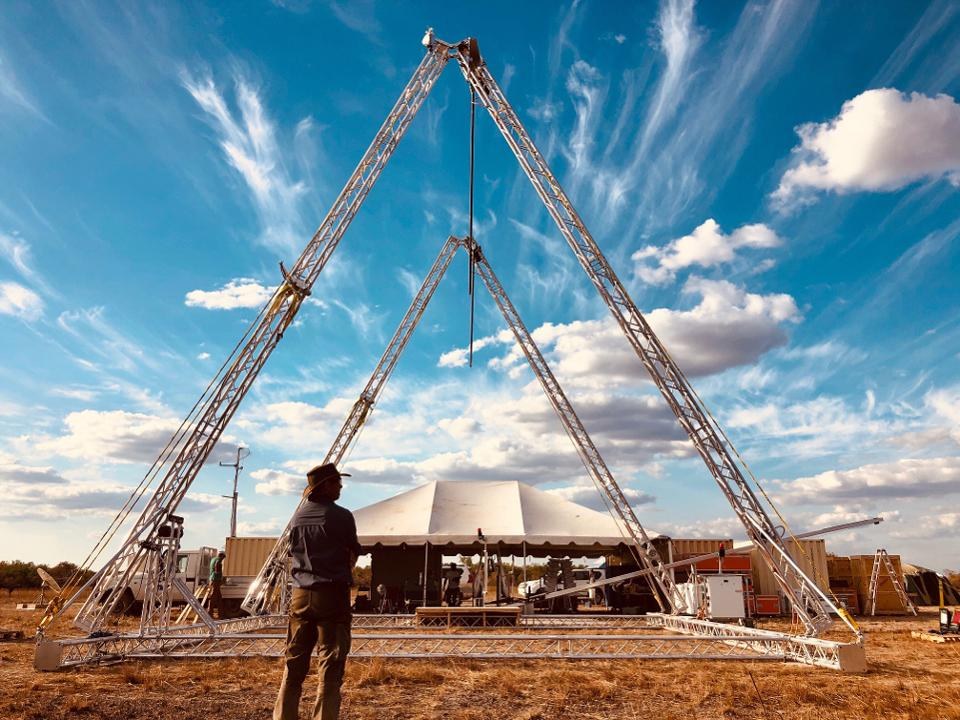
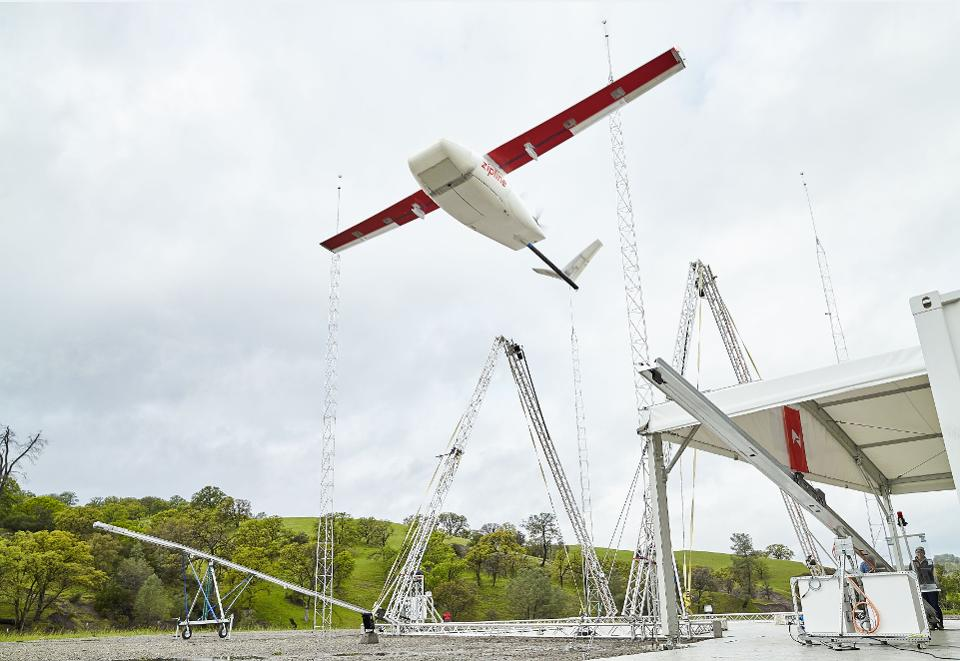
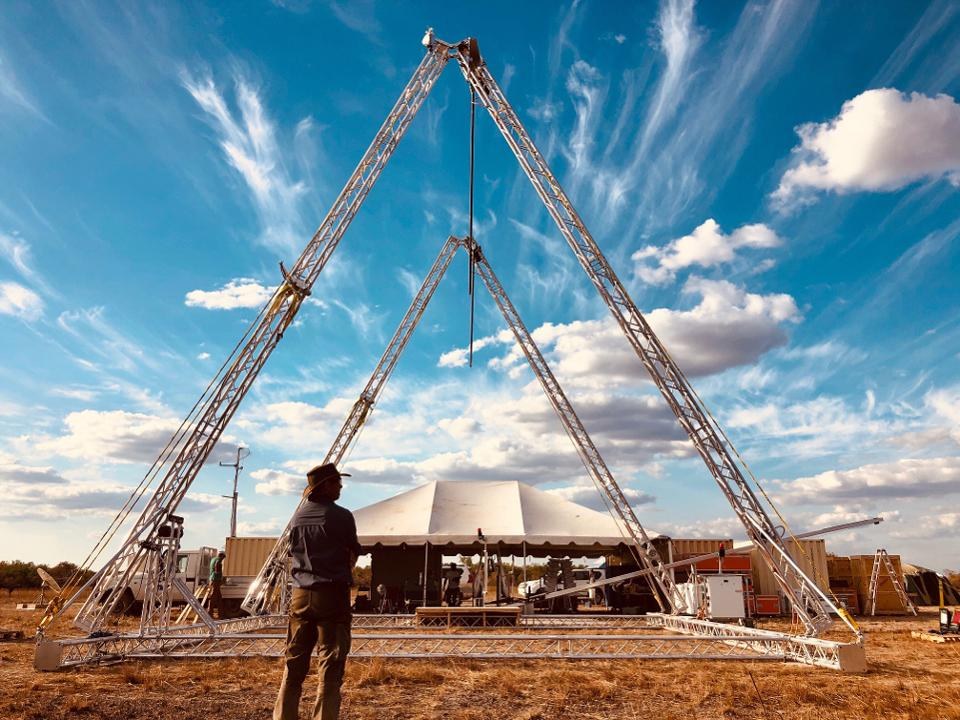

The Lore
A wounded person's chances of survival increase nearly threefold if they receive a blood transfusion within an hour of being injured. Unfortunately, blood supplies are typically so far that that it's unlikely to deliver the blood or evacuate that person in time, especially in combat zones or disaster locations. Then we thought, "what if we used drones to do that?"

Drones cost less to procure and maintain, put fewer lives at risk, and much more quickly deploy and deliver supplies to wherever needed. We had to add them to the toolbox. I helped with the project as a Product Manager to ideate adapting commercial technology to national defense applications, guide private companies through the Department of Defense's (DoD) complex acquisitions process, and mediate between companies and frontline personnel to balance mission needs and business priorities.
We sought out a solution that fulfilled these critical values in mind:
Rapid Prototyping
User-Centered Design
Commercially viable, mature technology
A nimble value stream from request to delivery
 
Since the project's inception, a dozen companies have pitched their ideas, and three companies were invited to provide a full proposal to us and the end-users. One of the main contenders, Zipline, which already has a mature operation in Rwanda, has most recently participated in a joint exercise with the US Marine Corps and the Australian Defence Force.
About the Defense Innovation Unit
The Defense Innovation Unit is a fast-moving Department of Defense (DoD) organization that contracts with commercial companies to solve national security problems with commercial talent and innovation.
It is the only DoD organization focused exclusively on fielding and scaling commercial technology across the U.S. Armed Forces to help solve critical problems. It has been lowering barriers to entry into the defense market for commercial companies driving innovation in emerging and foundational technology areas.
By focusing on the fundamental problem and the tangible value that solving it would bring to the end user, we've created a new way for businesses to bring modern technology to the DoD at commercial speeds that the on-the-ground user actually loves and values.